Primus is known as one of the most influentual bands of all of funk metal, with the founder, bassist, frontman, and vocalist Les Claypool being the biggest reason.
Claypools bass playing is considered to be one of the most technical and complex with him often playing on a fretless 6 string bass.
Claypool forever changed the face of bass playing with him being one of the few frontmans who play bass, or more importantly one of the few bassists who play a major part in a band.
Album |
Cover |
|---|---|
"Suck On This"(1989) |
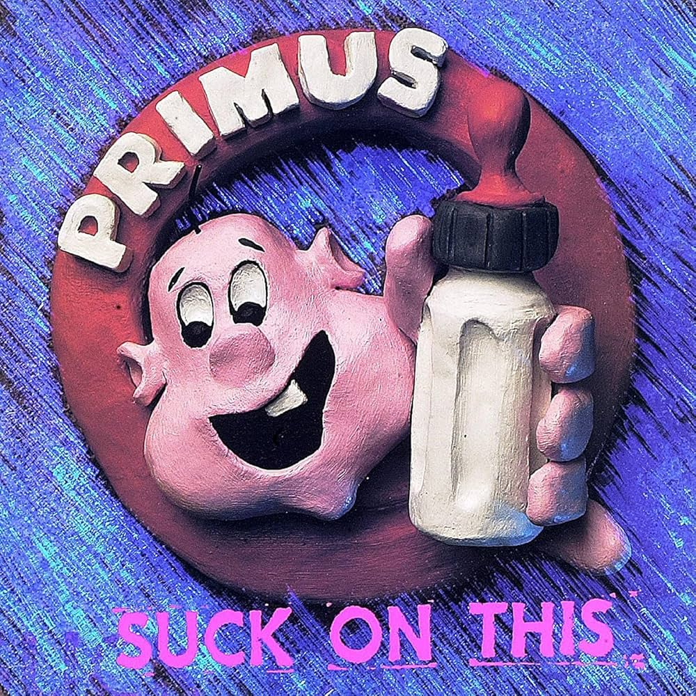 |
"Frizzle Fry"(1990) |
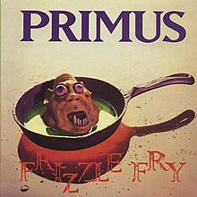 |
"Sailing The Seas of Cheese"(1991) |
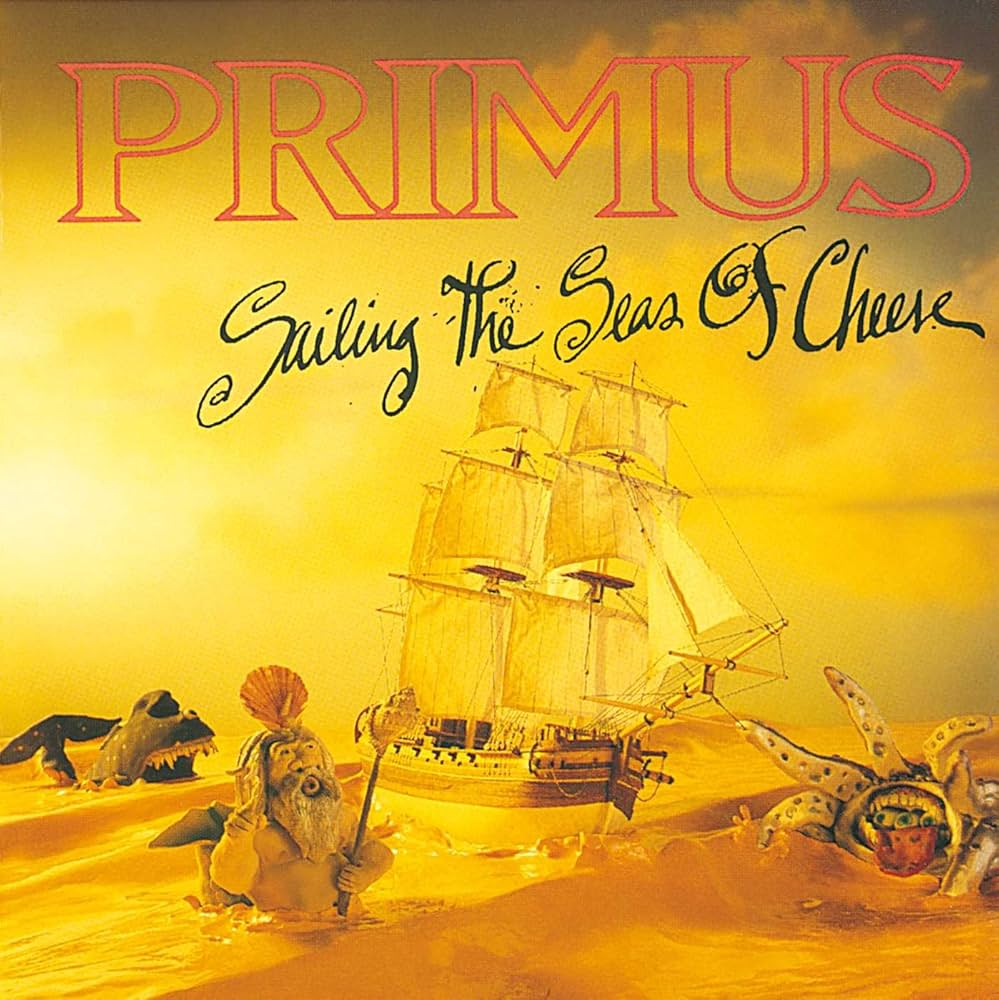 |
"Pork Soda"(1993) |
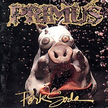 |
"Tales from the Punchbowl"(1995) |
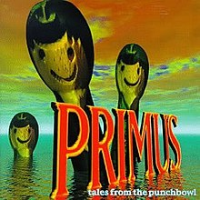 |
"Brown Album"(1997) |
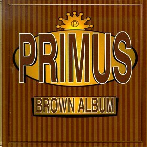 |
"Antipop"(1999) |
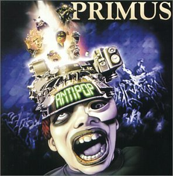 |
"Green Naugahyde"(2011) |
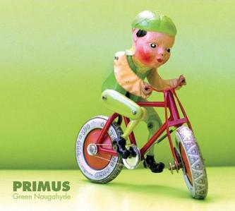 |
"Primus & The Chocolate Factory with the Fungi Ensemble"(2014) |
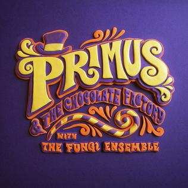 |
"The Desaturating Seven"(2017) |
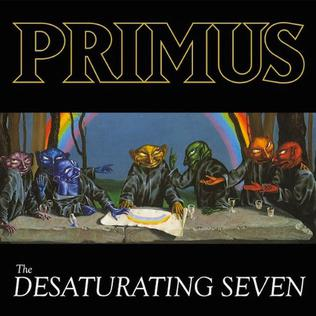 |
Primus is one of the most Genre defying and creative bands of the 90s, and even if you don't think you've listened to any of their music ever, you probably have because Les Claypol is the one who sings in the South Park intro.
| 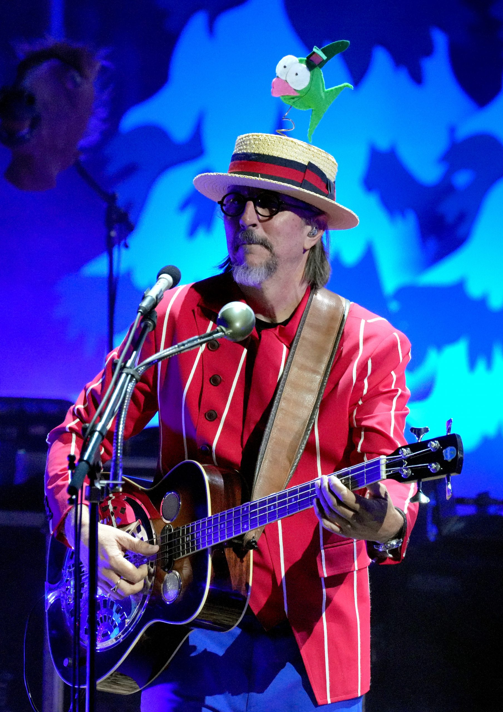 | "Les Claypool playing the Southpark intro with Trey Parker and Matt Stone" |
|---|